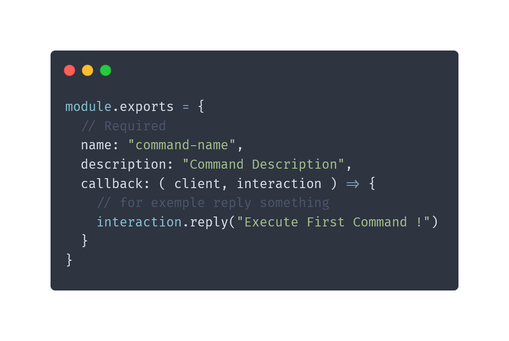

Create commands is simple, you need to create file(s) in differents directories and add in file(s) some requied informations like, the name of the command, the description and many other settings. And process the command with logic to create your command. So the command handler is really userfull and easy to create differents commands.
To create a command you need
A basic command required minimum 2 paramerters, name and description but with 2 paramerters, you can't do anything else of just register it in your discord bot so you can add a parameter callack who is a function to add your logic.
